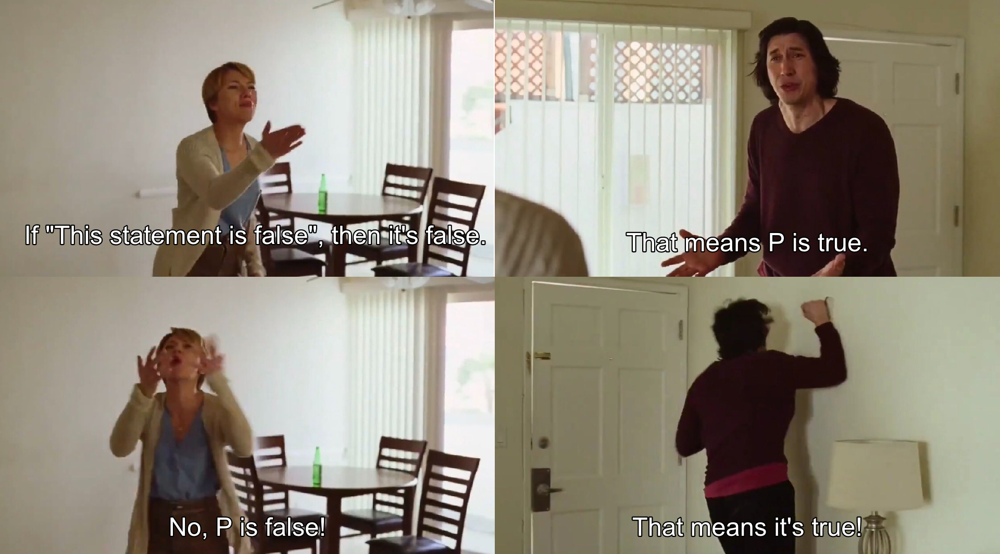

Paradoxes, Provability and Truth
Athar Abdul-Quader
February 16, 2022
Liar’s Paradox
Let \(P\) be the assertion: “This statement is false.”
Is \(P\) true? Is \(P\) false?

Resolution
- The resolution to the liar’s paradox is that the assertion \(P\) is not a statement, and so does not have a truth value.
- Often, it is assumed: statements cannot be self-referential.
- Let’s investigate this today. Is this really the problem? Why can’t statements be self-referential?
Today:
- What are statements? What are formulas?
- Can statements / formulas refer to other statements / formulas?
- Can statements refer to themselves? What happens if we formalize this paradox?
Moral of the story: “Lots of things can be encoded in arithmetic.”
Legal Notice
- Logic is the branch of mathematics (and philosophy) dealing with formalizing and assigning truth values to assertions.
- What statements are allowed? Depends on what you want to talk about.
- Let’s talk about arithmetic!
- Start with: equations / inequalities of terms (using \(+\) and \(\times\)).
Examples
- \(x < y\)
- \(x > 3\)
- \(2x + 3y^4 + z^2 < 78\)
- These are all called “atomic” formulas.
More formulas
- Add in conjunctions (\(\wedge\)), disjunctions (\(\vee\)), negations (\(\lnot\)), and quantifiers (\(\forall\) and \(\exists\))
- Examples (without quantifiers):
- For which natural numbers is \(x > 3 \wedge x < 4\) true?
- For which natural numbers is \(x > 3 \vee x < 4\) true?
- For which natural numbers is \(\lnot (x > 3)\) true?
Quantifiers
- \(\forall x P(x)\) means “The property \(P(x)\) is true for every natural number \(x\).”
- \(\exists x P(x)\) means “There is some natural number \(x\) such that \(P(x)\) is true.”
- “Natural number” means \(0, 1, 2, \ldots\) (non-negative, whole numbers)
- Aside: technically, we also allow \(\rightarrow\) and \(\leftrightarrow\):
- \(p \rightarrow q\) is defined as \(\lnot p \vee q\)
- \(p \leftrightarrow q\) is defined as \(p \rightarrow q \wedge q \rightarrow p\).
Exercise
Exercise: Let \(P(x)\) be the formula \[x > 1 \wedge \forall y \forall z [(yz = x) \rightarrow (y = x \vee z = x)].\] For which natural numbers \(n\) is \(P(n)\) true?
Recall: \(\forall y\) means “for every natural number \(y\).”
Statements
A statement is a formula (built up in the above way) in which all variables are either replaced by natural numbers, or bound by a quantifier.
- \(\forall x (x > 5 \rightarrow x > 3)\) is a true statement
- \(\forall x (x > y \rightarrow x > z)\) is a formula, with free variables \(y\) and \(z\).
- \(\forall x_1 \exists x_2 (x_2 > x_1 \wedge P(x_2))\), where \(P(x)\) was the formula defined in the exercise?
- Is this a statement?
- Is it true?
Self-reference
So can an assertion refer to itself? No!
- Formulas describe properties of (natural) numbers.
- A statement can quantify over those numbers, or can say something about specific numbers (like 5 and 3).
- Numbers aren’t statements!
…are they?
Aside: Quines
What does the following Python code output?
Numbering
- Consider a program (in whatever programming language you know) which takes in one input, \(s\).
- The program determines if \(s\) represents a legal formula of arithmetic.
Questions:
- What is the data type of \(s\)? (Built-in data type, no OOP here.)
- How is \(s\) actually represented in memory?
Unicode
- All inputs can be handled as strings.
- Strings are “arrays of characters”.
- Characters are stored as numbers, using some encoding (ASCII or Unicode).
- In fact: all data on a computer eventually is stored as a number!
Gödel Code
- There is a (computable) function which converts a formula \(\theta(x)\) to a number.
- Can you figure out how?
- This function is one to one, and therefore there is a (computable) inverse.
- We refer to this as the Gödel code of the formula.
- For a formula \(\theta(x)\), represent its Gödel code as \(\ulcorner \theta(x) \urcorner\).
- So a formula can talk about properties of statements (or other formulas)!
- Ex: “The statement with code \(n\) has length \(m\).”
Proofs
- What is a proof, formally?
- A sequence of “deductions”.
- In other words: a sequence of statements.
- Each statement is either:
- an “axiom”,
- a hypothesis of the proof,
- or follows from previous statements, using rules like “modus ponens”.
- If numbers can refer to statements, then sequences of numbers can refer to proofs!
Sequences
- Next step: code sequences of numbers.
- Many ways of doing this. My favorite uses prime factorization.
- Let \(p_0, p_1, p_2, \ldots\) be the sequence of prime numbers in order. (So \(p_0 = 2, p_1 = 3, \ldots\))
- The sequence \(\langle x_0, x_1, \ldots, x_{n-1} \rangle\) is coded by the number \(p_0^{x_0} \times p_1^{x_1} \times \ldots \times p_{n-1}^{x_{n-1}}\).
Proofs, coded
There is a formula \(Pr(x, y)\) that says:
- The number \(x\) represents a sequence \((x_0, \ldots, x_{n-1})\).
- The number \(y\) represents the Gödel code of a statement \(\theta\).
- Each number \(x_i\) is the Gödel code of a statement \(\phi_i\), and \(\phi_{n-1} = \theta\).
- Each statement \(\phi_i\) is either an axiom of arithmetic, a hypothesis of \(\theta\), or follows from previous statements \(\phi_j\) using the rules of inferences.
Things to think about
- What does \(\exists x Pr(x, y)\) assert?
- How might we write down a formula \(Pr(x, y)\)?
- What “logical” or “proof-theoretic” properties does \(Pr(x, y)\) have?
- For example, can we formalize the modus ponens principle: if \(p \rightarrow q\) and \(p\) are provable, then \(q\) is provable?
- (Yes.)
Self Reference
So far:
- Formulas can talk about statements.
- In fact, formulas can talk about whether or not a statement is provable.
- But what about self-reference?
- Are self-referential statements inherently impossible?


Fixed Points
Theorem (Gödel 1931 / Carnap 1934): For every formula \(\theta(x)\) of arithmetic, there is a statement \(P\) such that \(\theta(\ulcorner P \urcorner) \leftrightarrow P\) is true.
- Usually referred to as the “Fixed Point Lemma”.
- \(P\) essentially asserts “I have the property defined by \(\theta\).”
- Technically: \(P\) is really asserting something about its code, but it really is self-referential: consider the “fixed point” of \(\exists x Pr(x, y)\).
“How shocking it is to find that self-reference, the stuff of paradox and nonsense, is fundamentally embedded in our beautiful number theory! The fixed point lemma shows that every elementary property \(F\) admits a statement of arithmetic asserting ‘this statement has property \(F\)’.”
Applications
- Consider the statement \(\theta(z) = \lnot \exists x (Pr(x, z))\).
- \(\theta(z)\) is true about \(\ulcorner P \urcorner\) if and only if there is no proof of \(P\).
- Fixed Point Lemma: there is \(P\) such that \(\theta(\ulcorner P \urcorner)\) if and only if \(P\) is true.
- \(P\) expresses “This statement has no proof.”
- Is \(P\) true? Is it false?
- How is this any different from the Liar’s Paradox?
Resolution
- \(P\) cannot be false, otherwise there would be a proof that it is true.
- It must be true. But there is no proof that it is true.
- It is different from the Liar’s Paradox: \(P\) is an actual statement, whose existence is guaranteed by the Fixed Point Lemma!
- In other words: there are arithmetic statements which are true, but have no proof from the axioms of arithmetic!
- This is Gödel’s (First) Incompleteness Theorem!
Liar’s Paradox
Theorem (Tarski): There is no formula \(\theta(x)\) such that for each arithmetic statement \(P\), \(P\) is true if and only if \(\theta(\ulcorner P \urcorner)\) is true.
- “Tarski’s Undefinability of Truth”.
- Can you think of a proof? (Argue by contradiction, and use the Fixed Point lemma.)
- Provability can be expressed in logic, but truth cannot!
Resolution
- So what do we make of the “Liar’s Paradox”?
- What’s the problem with “This statement is not true”?
- It’s not that it’s a statement that talks about statements: Gödel coding allows for that.
- It’s not that it’s self-referential: the fixed-point lemma allows for that.
- It’s that it talks about truth!
- Truth is somehow different from provability.
A Puzzle
Consider the following infinite family of assertions:
- \(S_0\): each \(S_i\) is false for all \(i > 0\).
- \(S_1\): each \(S_i\) is false for all \(i > 1\).
- …etc (so \(S_n\) is “each \(S_i\) is false for all \(i > n\)”.)
Is \(S_0\) true? Is it false?